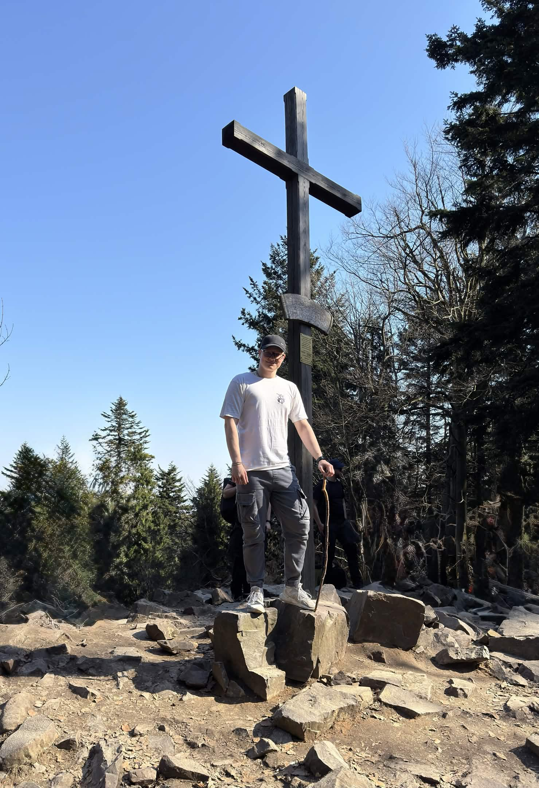

Kilka informacji o mnie
Pochodzę z małej miejscowości, gdzie możliwości często kończyły się na stabilnej, ale powtarzalnej pracy. Od zawsze wiedziałem jednak, że klepanie Excela przez osiem godzin dziennie to nie jest mój szczyt możliwości.
Informatyka stała się dla mnie biletem do świata, w którym to ja tworzę narzędzia, a nie tylko wypełniam komórki danymi. To tutaj łączę analityczne myślenie z kreatywnym kodowaniem.
Moje pasje
GÓRY // WYTRWAŁOŚĆ
To tam uczę się, że każdy duży cel wymaga tysięcy małych kroków. Korona Gór Polski to dla mnie nie tylko statystyka, ale sprawdzian charakteru.

STRZELECTWO
Maksymalne skupienie. W sporcie strzeleckim liczy się tylko "tu i teraz". Precyzja, której tam się uczę, bezpośrednio przekłada się na jakość mojego kodu.

MOTORYZACJA // USA
Fascynacja surową mechaniką. Moim celem jest sprowadzenie i odrestaurowanie klasyka z USA – od zera, własnymi rękami.